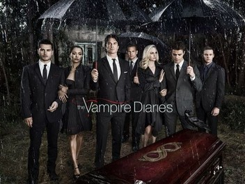

New Girl
New Girl is a comedy series about Jess Day, an upbeat and quirky teacher who moves into a loft with three men after a bad breakup. The show focuses on the friendships and romantic relationships that develop among the roommates. Jess’s optimism and eccentric personality often clash with the more cynical attitudes of Nick, Schmidt, and Winston. As the characters grow closer, the series explores themes of adulthood, love, and personal growth. The humor comes from awkward situations, witty dialogue, and strong character chemistry. Over time, each character matures while still maintaining their unique quirks. Overall, New Girl is a lighthearted show about chosen family and navigating life in your twenties and thirties.
- New Girl Wiki
- Witty
- Sitcom
- Comforting

The Vampire Diaries
The Vampire Diaries is a supernatural drama series set in the small town of Mystic Falls, where vampires, witches, and other creatures secretly exist. The story follows Elena Gilbert, a teenage girl whose life changes when she meets the mysterious vampire brothers Stefan and Damon Salvatore. As Elena becomes entangled in their world, she faces danger, loss, and complicated romantic choices. The show explores themes of love, loyalty, and morality through its characters’ struggles between humanity and darkness. Family legacies and centuries-old rivalries play a major role in shaping the plot. Action, romance, and emotional twists drive the series forward. Overall, The Vampire Diaries blends supernatural elements with intense character drama and coming-of-age themes.
- The Vampire Diaries Wiki
- Supernatural
- Emotional
- Romantic
